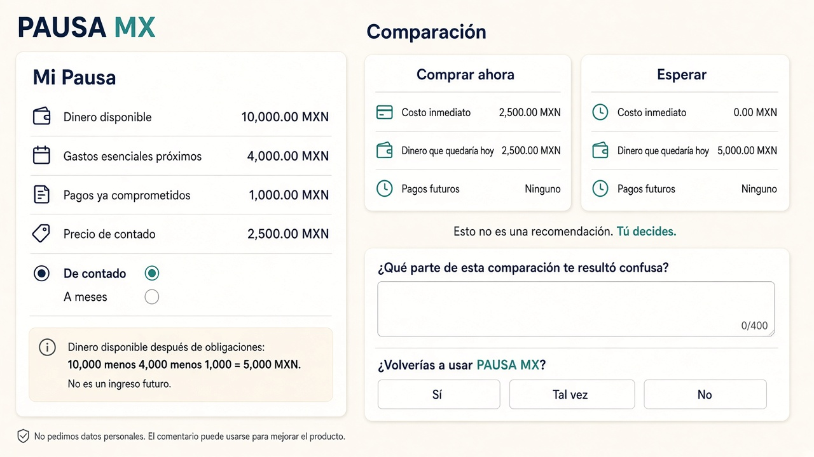

PAUSA MX. Antes de comprar, entiende lo que comprometes.
Documento escrito antes de modificar el código de aplicación de Week 13. Fuente: docs/WEEK13_PACKET.md.
Producción Week 12: https://pausa-mx-week12.vercel.app
GitHub: https://github.com/miguelbbuilds-gif/pausa-mx-week12
Commit de partida: 3f2b42b3cfe6f76064208db837c2b2484b2b604d
Rama de trabajo: week13-real-humans
Verificación previa: HTTP 200 en / y /product (2026-11-09 01:41 UTC). Vitest: 15 pruebas verdes.
Los consumidores mexicanos necesitan comprender el impacto financiero de una compra sobre el dinero disponible y las obligaciones existentes. PAUSA MX ya calcula esa comparación. Todavía no sabemos qué partes les resultan confusas.
Adultos mexicanos que evalúan compras personales y pueden introducir cantidades aproximadas en MXN. Valeria y Daniel, en docs/PERSONAS.md, siguen siendo personas sintéticas, no entrevistados.
Al escribir este packet, ninguna de esas seis condiciones está cumplida. Implementar el mecanismo de feedback no las sustituye.
Imagen generada el 2026-11-08. No es captura de producción. El ejemplo ficticio cuadra con el motor: 10,000 − 4,000 − 1,000 = 5,000 después de obligaciones; comprar ahora deja 2,500; esperar deja 5,000.

Inicio → Mi Pausa → evento evaluation_started sin montos → validación → si falla, validation_error solo con código de campo → si pasa, el motor corre en el dispositivo → comparación → comparison_viewed → feedback opcional → feedback_submitted → guardar solo con sesión → save_attempted y, si inserta, evaluation_saved sin copiar cifras al evento.
Usuario escribe cantidades, lee Comprar ahora / Esperar y puede decir qué confundió. Aplicación valida, calcula en el dispositivo y registra solo el nombre del evento. Almacenamiento guarda evaluaciones del dueño y no publica feedback ni investigación. Fundador observa sesiones reales, anota la cita textual con consentimiento y solo después prioriza tres problemas.
| Producto | Hecho verificado el 2026-11-08 | Hipótesis, no comprobada en una cuenta |
|---|---|---|
| YNAB | 109 USD al año o 14.99 USD al mes, más impuestos. Prueba de 34 días sin tarjeta en el alta directa. Conexión de cuentas e importación. FAQ: importación directa en bancos seleccionados de EE. UU., Canadá, Reino Unido y UE. | No está hecho para una sola compra en MXN sin banco. No se abrió una cuenta. |
| MoneyHelper Budget planner | Herramienta gratuita del Reino Unido. Suma ingresos y gastos y muestra el sobrante. El registro de GOV.UK describe consejos, guardado y descarga. | No compara una compra concreta “ahora” contra “esperar”. |
| CONDUSEF Planificador | La URL oficial respondió con el título del Planificador de Presupuesto Personal y Familiar. Es una herramienta pública mexicana de ingresos y gastos. | No se completó una simulación. No se afirma que compare una compra a meses tal como la escribe el usuario. |
BBVA México, Dinero inteligente, publica la regla 70/20/10 y una calculadora de práctica. PAUSA MX no adopta esa regla ni recomienda al banco.
Dentro de tres años, PAUSA MX puede ser el lugar breve al que un adulto en México entra antes de una compra que movería el dinero del periodo, y sale con la cuenta a la vista. Si las sesiones reales muestran qué frases confunden, el producto puede aclararlas sin convertirse en un asesor que decide por la persona. Cualquier cobro por historial o por un hogar compartido sigue siendo una hipótesis hasta que alguien distinto del fundador diga que volvería y por qué.
Fuera: recomendación de compra, banco, Buró, catálogo, checkout, chatbot central, analítica con montos o correos, citas inventadas, compra de dominio por el agente, y tratar el correo/contraseña como si fuera Google OAuth.
| Capa | Elección |
|---|---|
| App | Next.js App Router, React, TypeScript, Tailwind, Zod |
| Motor | src/engine, sin volverse una recomendación |
| Auth | Correo y contraseña, más el botón Continuar con Google. La sesión de Google sigue pendiente del proveedor. |
| Datos | PostgreSQL + RLS. Admin comprobado en servidor |
| Host | Vercel y GitHub, mismo repositorio |
Mecánicas: TypeScript, ESLint, Vitest, Playwright, casos financieros, feedback, eventos, auth, RLS, acceso de fundador, móvil y HTTP de producción. Persona sintética: guion más capturas reales; la ejecución en un chat externo queda pendiente si no ocurre. Cinco humanos: protocolo aparte; cero filas simuladas.
Sin secretos en el repo ni en el cliente. RLS en tablas privadas. Validación y límites. Sin datos personales reales en demostraciones. El comentario avisa que puede usarse para mejorar el producto. Google OAuth no se declara hecho.
Este PDF existe antes del código nuevo. El resto — eventos, feedback, panel, dos despliegues, cinco humanos, dominio, Google — se marca hecho solo con evidencia posterior.
| Requisito | Estado |
|---|---|
| Condiciones y shadow clause del Blueprint Week 13 | PENDIENTE. No se inventaron. docs/WEEK13_BLUEPRINT.md |
| Sign in with Google | Código en producción. PENDIENTE el Client ID y el Client Secret en los dashboards. |
| Migraciones y RLS | Aplicadas en xrpbbmdossmlbstjrlta. app_admins sigue vacío. |
| Dominio comprado | PENDIENTE. RDAP 302/404 no prueba disponibilidad ni propiedad. |
| Cinco sesiones y evidencia de retorno | PENDIENTE. |
| BUILDCHAT export y DEMO mp4 | PENDIENTE. No se redacta un chat ficticio. |